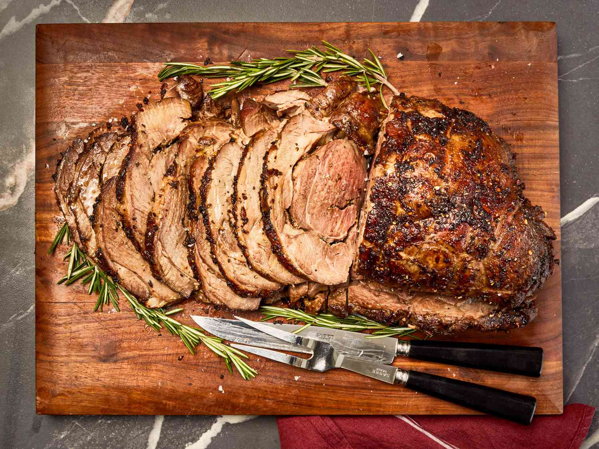

Australian Meat Pie
 Region: Oceania (Australia)
Region: Oceania (Australia)
Ingredients
- 500g Ground beef
- 1 Onion, finely diced
- 2 tbsp Worcestershire sauce
- Beef stock and Cornstarch (for thick gravy)
- Shortcrust pastry (base) & Puff pastry (lid)
Instructions
- Brown beef and onions; add stock and sauces. Simmer until thick.
- Line a pie tin with shortcrust pastry and fill with meat mixture.
- Place puff pastry on top and seal the edges.
- Bake at 200°C for 25 minutes until the lid is golden and flaky.
Grilled Barramundi
 Region: Oceania (Australia)
Region: Oceania (Australia)
Ingredients
- 2 Barramundi fillets (skin on)
- Lemon myrtle (optional indigenous herb)
- Olive oil and Sea salt
- Garlic butter and Parsley
- Lemon wedges
Instructions
- Pat the skin dry and score it slightly with a knife.
- Sear skin-side down in a hot pan with oil until crispy (about 4 mins).
- Flip and cook for 2 more minutes with garlic butter.
- Serve with a sprinkle of lemon myrtle and fresh lemon.
Australian Roast Lamb

Region: Oceania (Australia)
Ingredients
- 2kg Leg of Lamb
- 4 cloves Garlic, slivered
- Fresh Rosemary sprigs
- Olive oil, Salt, and Pepper
- Potatoes, Pumpkins, and Carrots (for roasting)
Instructions
- Make small slits in the lamb and insert garlic and rosemary.
- Rub with oil and salt; place in a roasting pan with vegetables.
- Roast at 180°C for approx. 1 hour 15 mins (for medium-rare).
- Let the meat rest for 15 minutes before carving.
Classic Pavlova
 Region: Oceania (Australia)
Region: Oceania (Australia)
Ingredients
- 4 Egg whites
- 1 cup Caster sugar
- 1 tsp Cornstarch and 1 tsp White vinegar
- Whipped cream
- Passionfruit, Strawberries, and Kiwi fruit
Instructions
- Whisk egg whites to stiff peaks, then gradually add sugar until glossy.
- Fold in cornstarch and vinegar.
- Shape into a circle on a baking tray; bake at 120°C for 90 mins.
- Let cool completely in the oven; top with cream and fruit.